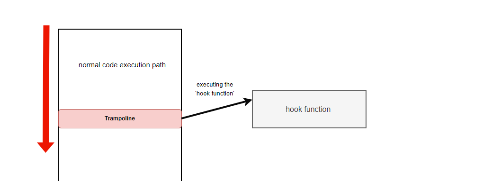
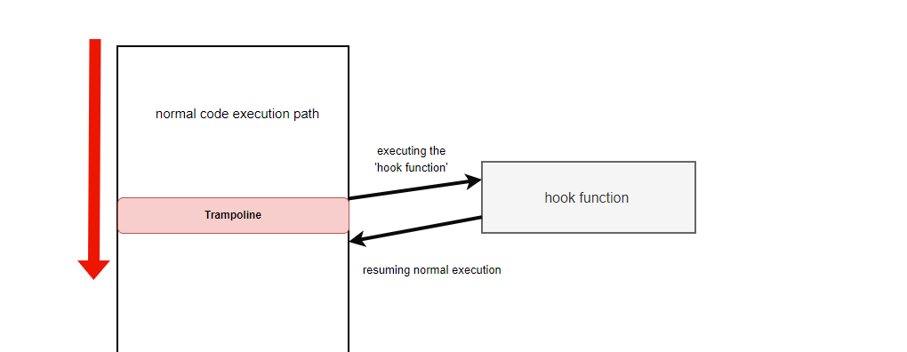

Introduction
API hooking is a technique used to intercept and modify the behavior of an API function. This is commonly used for debugging, reverse engineering and game cheating. API hooking involves replacing the original implementation of an API function with a custom version that performs some additional actions before or after calling the original function. This allows one to modify the behavior of a program without modifying its source code.
Trampolines
The classical way of implementing API hooking is done via trampolines. A trampoline is a shellcode that is used to alter the code execution path by jumping to another specific address inside the address space of a process. The trampoline's shellcode is inserted at the beginning of the function, resulting in the function becoming hooked. When the hooked function is called, the trampoline shellcode is triggered instead, and the execution flow is passed and altered to another address thus resulting in a different function being executed instead.

Inline Hooking
Inline hooking is an alternative approach to performing API hooking that operates similarly to trampoline-based hooking. The difference lies in the fact that inline hooks return execution to the legitimate function, allowing for normal execution to continue. While more complex to implement and potentially harder to maintain, inline hooks are more efficient.

API hooking is performed by security solutions to allow them to inspect commonly abused functions more thoroughly. This will be discussed more in-depth in future modules. This module explores how API hooking can enhance a malware's abilities.
Why API Hooking
Although API hooking is mostly used for malware analysis and debugging purposes, it can be utilized to be used in malware development for the following reasons:
Implementing Hooking
There are many ways to implement API hooking, one way is through open-source libraries such as Microsoft's Detours library and Minhook. Another more limited way is using Windows APIs that are meant to do API hooking (although for limited options).
In the next few modules, both Detours and Minhook will be demonstrated. Furthermore, Windows APIs will be used to see what they can offer. Finally, custom hooking code will be created to reduce signatures and IoCs that are commonly used to detect the usage of open-source libraries.